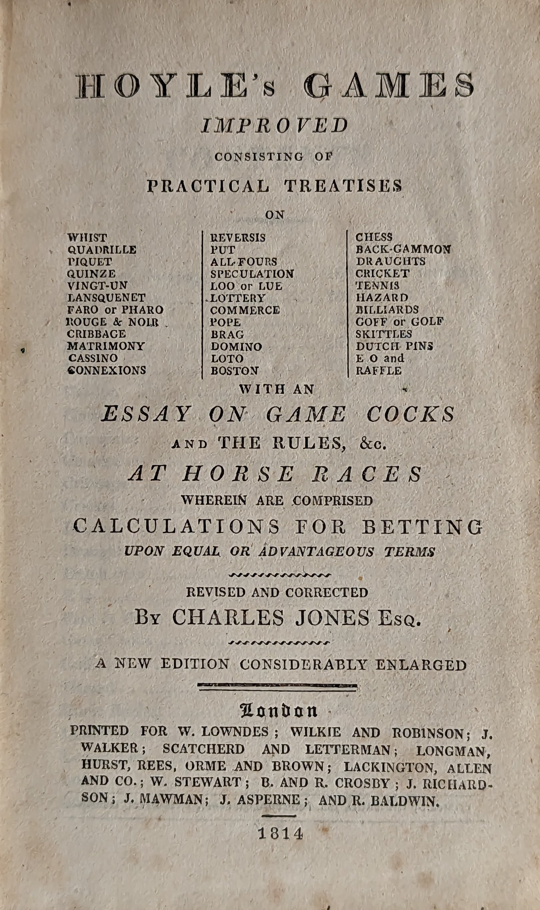

A Descriptive Bibliography of Edmond Hoyle
Copyright © 2014-26 by David Levy
(page updated 2026-02-26)User Guide
Jones.9
Hoyle's Games Improved, printed for W. Lowndes et al, ninth London edition, 1814.
 |
Title: | HOYLE's GAMES | IMPROVED | CONSISTING OF | PRACTICAL TREATISES | ON | [12 lines to left of rule] WHIST | QUADRILLE | PIQUET | QUINZE | VINGT-UN | LANSQUENET | FARO or PHARO | ROUGE & NOIR | CRIBBAGE | MATRIMONY | CASSINO | CONNEXIONS | [12 lines between two rules] REVERSIS | PUT | ALL-FOURS | SPECULATION | LOO or LUE | LOTTERY | COMMERCE | POPE | BRAG | DOMINO | LOTO | BOSTON | [12 lines to right of rule] CHESS | BACK-GAMMON | DRAUGHTS | CRICKET | TENNIS | HAZARD | BILLIARDS | GOFF or GOLF | SKITTLES | DUTCH PINS | E O and | RAFFLE | WITH AN | ESSAY ON GAME COCKS | AND THE RULES, &c. | AT HORSE RACES | WHEREIN ARE COMPRISED | CALCULATIONS FOR BETTING | UPON EQUAL OR ADVANTAGEOUS TERMS | [short rule] | REVISED AND CORRECTED | By CHARLES JONES, Esq. | [short rule] | A NEW EDITION CONSIDERABLY ENLARGED | [short oxford rule] | London | PRINTED FOR W. LOWNDES; WILKIE AND ROBINSON; J. | WALKER; SCATCHERD AND LETTERMAN; LONGMAN, | HURST, REES, ORME AND BROWN; LACKINGTON, ALLEN | AND CO.; W. STEWART; B. AND R. CROSBY; J. RICHARD-|SON; J. MAWMAN; J; ASPERNE; AND R. BALDWIN | [short rule] | 1814 | |
| Collation: | 18o: A–2U6 [$1,3 (+A4) signed]; 258 leaves, pp. [4 ] [i] ii–viii, [1] 2–397 [398–399] 400–482 [483] 484–502 [503–504] |
| Half Title: | [rule] | HOYLE's GAMES | IMPROVED | By CHARLES JONES, Esq. | [short oxford rule] | Price Seven Shillings and Sixpence bound. | [rule] |
| Contents: | Signature (Page) Reference | Contents | Signature (Page) Reference | Running Titles |
| A1r | half title | |||
| A1v | blank | |||
| A2r | title | |||
| A2v | ‘[rule] | Printed by HANSARD, jun, Peterborough court, Fleet-street, London. | [rule]’ | |||
| A3r–A3v (i–ii) | ‘CONTENTS | [...]’ | A3v (ii) | ‘CONTENTS.’ | |
| A4r–A4v (iii–iv) | "The undermentioned parts or treatises may be purchased separate.1. HOYLE's TREATISES UPON WHIST AND QUADRILLE. [Jones.9-1] Price 2s. in extra boards. 2. HOYLE's GAMES IMPROVED AND SELECTED as a Companion to the Card Table [Jones.9-2], consisting of the Twenty-four Games first contained in this work. Price 4s. sewed, in a case like an almanack, with gilt edges. 3. HOYLE's GAME OF CHESS [Jones.8-2], with some Additions from other Amateurs, and a wood cut. Price 2s. in extra boards.4. HOYLE's TREATISE ON BACKGAMMON [Jones.8-3], with a wood cut. price 6d. sewed.5. INTRODUCTION TO PAYNE'S GAME OF DRAUGHTS, [Jones.8-4], with a wood cut. price 1s. sewed.6. DEW'S GAME OF BILLIARDS [Jones.2-1], with a copper-plate. price 1s. sewed. 7. DIRECTIONS FOR BREEDING GAME COCKS [Jones.6-1], with a copper-plate. Price 6d. sewed.8. GARD's ODDS AND CHANCES OF COCKING and other games. Price 5s. sewed9. A. JONES's ART OF PLAYING AT SKITTLES, with Wood Cuts. Price 1s. sewed. 10. GARD's ARTICLES, RULES AND ORDERS AT HORSE-RACES. [Jones.9-3] Price 1s. 6d. sewed. 11. RULES AND INSTRUCTIONS FOR SKITTLES, with a copper-plate. Price 6d. on a sheet broad folio, for the purpose of pasting on a board." | |||
| A5r–A5v (v–vi) | ‘[oxford rule] | RAFFLE. | [...]’ | A5v (vi) | ‘RAFFLE.’ | |
| A6r–A6v (vii–viii) | ‘[oxford rule] | WHIST. | [short oxford rule] | ODDS against and for the Dealer's Hand of Trumps. | [...]’ | A6v (viii) | ‘WHIST.’ | |
| B1r–B1v (1–2) | ‘THE | GAME OF WHIST. | [...]’ | B1v–H6v (2–84) | ‘WHIST.’ | |
| B1v–B2r (2–3) | ‘[...] | TWENTY-FOUR SHORT RULES FOR LEARNERS. | [...]’ | |||
| B2v (4) | ‘METHODS OF SCORING AT WHIST. | [...]’ | |||
| B2v–F5r (4–57) | ‘[...] | MR. HOYLE'S GAME AT WHIST. | [...]’ | |||
| F5r–G5v (57–70) | ‘[...] | MR. PAYNE'S MAXIMS FOR WHIST. | [...]’ | |||
| G6r–H6v (71–84) | ‘[short oxford rule] | ADDITIONS. | [...]’ | |||
| I1r–K4r (85–103) | ‘[...] | MR. HOYLE's | GAME OF | QUADRILLE. | [...]’ | I1v–K5v (86–106) | ‘QUADRILLE.’ | |
| K4r–K5v (103–106) | ‘[...] | ADDITIONS TO THE GAME AT QUADRILLE. | [...]’ | |||
| K6r–L3r (107–113) | ‘THE | GAME OF PIQUET. | [...]’ | K6v–M5v (108–130) | ‘PIQUET.’ | |
| L3r–M4v (113–128) | ‘[...] | MR. HOYLE'S GAME OF PIQUET. | [...]’ | |||
| M4v–M6r (128–131) | ‘[...] | LAWS OF THE GAME OF PIQUET. | [...]’ | |||
| M6r–M6v (131–132) | ‘[...] | THE GAME OF QUINZE. | [...]’ | M6r (131) | ‘QUINZE.’ | |
| M6v–N1v (132–134) | ‘[...] | THE GAME OF VINGT-UN. | [...]’ | M6v–N1r (132–133) | ‘VINGT-UN.’ | |
| N1v–N2r (134–135) | ‘[...] | THE GAME OF LANSQUENET. | [...]’ | N1v–N2r (134–135) | ‘LANSQUENET.’ | |
| N2v–N6v (136–144) | ‘THE GAME OF FARO. | [...]’ | N2v–N6r (136–143) | ‘FARO.’ | |
| N6v–O2r (144–147) | ‘[...] | THE GAME OF ROUGE ET NOIR. | [...]’ | N6v–O1v (144–146) | ‘ROUGE ET NOIR.’ | |
| O2r–P1r (147–157) | ‘[...] | THE GAME OF CRIBBAGE. | [...]’ | O2r–P1r (147–157) | ‘CRIBBAGE.’ | |
| P1v–P2r (158–159) | ‘THE GAME OF MATRIMONY. | [...]’ | P1v (158) | ‘MATRIMONY.’ | |
| P2r–P3v (159–162) | ‘[...] | THE GAME OF CASSINO. | [...]’ | P2r–P3r (159–161) | ‘CASSINO.’ | |
| P3v–P4r (162–163) | ‘[...] | THE GAME OF CONNEXIONS. | [...]’ | P3v (162) | ‘CONNEXIONS.’ | |
| P4r–P6v (163–168) | ‘[...] | THE GAME OF REVERSIS. | [...]’ | P4r–P6r (163–167) | ‘REVERSIS.’ | |
| P6v–Q1r (168–169) | ‘[...] | THE GAME OF PUT. | [...]’ | P6v (168) | ‘PUT.’ | |
| Q1r–Q2r (169–171) | ‘[...] | THE GAME OF ALL-FOURS. | [...]’ | Q1r–Q1v (169–170) | ‘ALL-FOURS.’ | |
| Q2r–Q2v (171–172) | ‘[...] | THE GAME OF SPECULATION. | [...]’ | Q2r (171) | ‘SPECULATION.’ | |
| Q2v–Q3r (172–173) | ‘[...] | THE GAME OF LOO. | [...]’ | Q2v (172) | ‘LOO.’ | |
| Q3r–Q3v (173–174) | ‘[...] | THE GAME OF LOTTERY. | [...]’ | Q3r–Q3v (173–174) | ‘LOTTERY.’ | |
| Q4r–Q5r (175–177) | ‘THE GAME OF COMMERCE. | [...]’ | Q4r–Q5r (175–177) | ‘COMMERCE.’ | |
| Q5v–Q6r (178–179) | ‘THE GAME OF POPE OR POPE JOAN. | [...]’ | Q5v–Q6r (178–179) | ‘POPE OR POPE JOAN.’ | |
| Q6v–R1v (180–182) | ‘THE GAME OF BRAG. | [...]’ | Q6v–R1r (180–181) | ‘BRAG.’ | |
| R1v–R2r (182–183) | ‘[...] | THE GAME OF DOMINO. | [...]’ | R1v (182) | ‘DOMINO.’ | |
| R2r–R3v (183–186) | ‘[...] | THE GAME OF LOTO. | [...]’ | R2r–R3v (183–186) | ‘LOTO.’ | |
| R4r–R6v (187–192) | ‘THE GAME OF BOSTON. | [...]’ | R4r–R6v (187–192) | ‘BOSTON.’ | |
| S1r–S5v (193–202) | ‘THE | GAME OF | CHESS. | [...]’ | S1v–2B6v (194–288) | ‘CHESS.’ | |
| S5v–T6r (202–215) | ‘[...] | MR. HOYLE'S RULES FOR CHESS. | [...]’ | |||
| T6r–U1r (215–217) | ‘[...] | LAWS OF CHESS. | [...]’ | |||
| U1r–X5v (217–238) | ‘[...] | MR. HOYLE'S CHESS LECTURES. | [...]’ | |||
| X5v–2B6v (238–288) | ‘[...] | PHILIDOR'S SELECT GAMES AT CHESS. | [...]’ | |||
| 2C1r–2C1v (289–290) | ‘THE GAME OF BACK-GAMMON. | [...]’ | 2C1r–2D6r (289–311) | ‘BACK-GAMMON.’ | |
| 2C1v–2D6v (290–312) | ‘[...] | MR. HOYLE's | TREATISE OF BACK-GAMMON. | [...]’ | |||
| 2D6v–2H2v (312–352) | ‘[...] | Mr. PAYNE'S GAME OF DRAUGHTS. | [...]’ | 2D6v–2H2r (312–351) | ‘DRAUGHTS.’ | |
| 2H2v–2H4v (352–356) | ‘[...] | CRICKET. | [...]’ | 2H2v–2H4r (352–355) | ‘CRICKET.’ | |
| 2H4v–2I1r (356–361) | ‘[...] | TENNIS. | [...]’ | 2H4v–2H6v (356–360) | ‘TENNIS.’ | |
| 2I1r–2I4r (361–367) | ‘[...] | THE GAME OF HAZARD. | [...]’ | 2I1r–2I4r (361–367) | ‘HAZARD.’ | |
| 2I4v–2N5v (368–418) | ‘THE GAME OF BILLIARDS. | [...]’ | 2N5v–2N5v (418–418) | ‘BILLIARDS.’ | |
| on 2M1v–2M2r (398–399) | blank | |||
| 2N6r–2N6v (419–420) | ‘THE GAME OF GOFF, OR GOLF. | [...]’ | 2N6r–2N6v (419–420) | ‘GOFF.’ | |
| 2O1r–2O3r (421–425) | ‘THE GAME OF SKITTLES. | [...]’ | 2O1r–2O2v (421–424) | ‘SKITTLES.’ | |
| 2O3r–2O4r (425–427) | ‘[...] | DUTCH PINS. | [...]’ | 2O3r–2O3v (425–426) | ‘DUTCH PINS.’ | |
| 2O4r–2O4v (427–428) | ‘[...] | THE GAME OF E O. | [...]’ | 2O4r–2O4v (427–428) | ‘E O.’ | |
| 2O4v–2R2r (428–459) | ‘[...] | TREATISE | ON GAME COCKS. | [...]’ | 2O5r–2R2r (429–459) | ‘GAME COCKS.’ | |
| 2R2v–2U5v (460–502) | ‘HORSE-RACING | [...] | [colophon]’ | 2R3r–2U5v (461–502) | ‘HORSE-RACING.’ | |
| on 2T2r (483) | blank | |||
| 2U6r–2U6v (503–504) | ‘BOOKS PRINTED FOR THE PROPRIETORS. | [...]’ | 2U6v (504) | ‘Books printed for the Proprietors’ |
| Plates: | on O1r(145) woodblock: a tapis or cloth covering the Rouge et Noir table on S1v(194) woodblock: ‘CHESS MEN | [...] | ..THE CHESS BOARD.’ on 2C1r(289) woodblock: a backgammon board showing the starting position on 2E1v(314) woodblock: ‘[...] | DRAUGHT TABLE. | [...]’ on 2M1v(398) copperplate: ‘PLAN OF FORTICATION BILLIARDS.’ on 2M2r(399) copperplate: ‘PERSPECTIVE VIEW OF FORTICATION BILLIARDS.’ |
| Press Figures: | 2I6r(i):‡; 2L6v(o):†; 2M4v(o):*; 2M6v(o):†; 2R6v(o):‡; 2T1v(i):* |
| Publisher: | William Lowndes, Wilkie and Robinson, J. Walker, Scatcherd and Letterman, Longman, Hurst, Rees, Orme, and Brown, Lackington, Allen and Co., William Stewart, Benjamin and Richard Crosby, John Richardson, Joseph Mawman, James Asperne, Robert Baldwin II, Gale, Curtis and Fenner |
| Printer: | Thomas Curson Hansard (colophon, Longman Archives) |
| Notices: | 1814-01-04 The Morning Chronicle: "In a pocket volume, price 7s. 6d. bound, a corrected edition of Charles Jones's Hoyle's Games Improved...from whom may be had, several of the above-mentioned games, printed in separate pamphlets." |
| Price: | 7s.6d. (advertisement, half title) |
| References: | Horr 742, Jessel 925, Rather 103 |
| Colophon: | ‘[rule] | Printed by T. C. Hansard, Peterborough Court, | Fleet Street, London. | [rule].’ |
| Copies Seen: | BFl [I.795/HOYL (b1124876)]; O [3843 f.19]; O [Jessel f.603]; Copisarow; OCl [789.87H H4j]; TNJ [GV1229.J7 1814]; Levy [1689] |
| Other Copies: | AWn [GV1201.H86]; DUu [SC 09533]; Lu-2 [DeM Y13 Hoyle]; HAG [XSB 412] (Google); LT [DAM 195]; CaOTP [794 H59 1814]; LU [GV1243.H854 1814]; MH [SG 3652.214] (Google); NjP [4284.05.479.16] |
| Notes: | Jessel 924 and Horr 741 note an 1813 edition with vi+492 pages. Jessel is quite specific, noting that it adds the games of Boston and Dutch Pins to the 1808 edition and goes on to record an 1814 edition which adds the game of Raffle. No copies of an 1813 edition are known to survive, including at the Bodleian Library which houses the Jessel collection. There is no hint of such a book in the Longman Archives, although the archives give a publication date of December 24, 1813 for this book. I have chosen not to include it in this bibliography. |